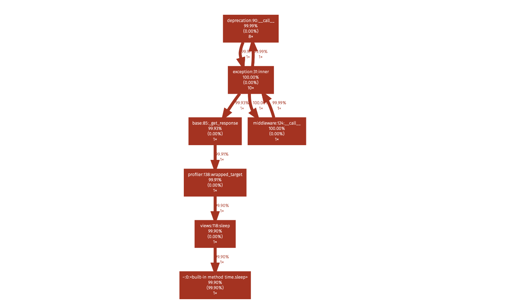

Profiling & Optimizing Bottlenecks In Django
In the previous article, we have learnt where to start with performance optimization in django application and find out which APIs to optimize first. In this article, we will learn how to optimize those selected APIs from the application.
Profling APIs With django-silk
django-silk provides silk_profile function which can be used to profile selected view or a snippet of code. Let's take a slow view to profile and see the results.
from silk.profiling.profiler import silk_profile @silk_profile() def slow_api(request): time.sleep(2) return JsonResponse({'data': 'slow_response'})
We need to add relevant silk settings to django settings so that required profile data files are generated and stored in specified locations.
SILKY_PYTHON_PROFILER = True SILKY_PYTHON_PROFILER_BINARY = True SILKY_PYTHON_PROFILER_RESULT_PATH = '/tmp/'
Once the above view is loaded, we can see the profile information in silk profiling page.
In profile page, silk shows a profile graph and highlights the path where more time is taken.

It also shows cprofile stats in the same page. This profile data file can be downloaded and used with other visualization tools like snakeviz.

By looking at the above data, we can see most of the time is spent is time.sleep in our view.
Profling APIs With django-extensions
If you don't want to use silk, an alternate way to profile django views is to use runprofileserver command provided by django-extensions package. Install django-extensions package and then start server with the following command.
$ ./manage.py runprofileserver --use-cprofile --nostatic --prof-path /tmp/prof/
This command starts runserver with profiling tools enabled. For each request made to the server, it will save a corresponding .prof profile data file in /tmp/prof/ folder.
After profile data is generated, we can use profile data viewing tools like snakeviz, cprofilev visualize or browse the profile data.
Install snakeviz using pip
$ pip install snakeviz
Open the profile data file using snakeviz.
$ snakeviz /tmp/prof/api.book.list.4212ms.1566922008.prof
It shows icicles graph view and table view of profile data of that view.

These will help to pinpoint which line of code is slowing down the view. Once it is identified, we can take appropriate action like optimize that code, setting up a cache or moving it to a task queue if it is not required to be performed in the request-response cycle.